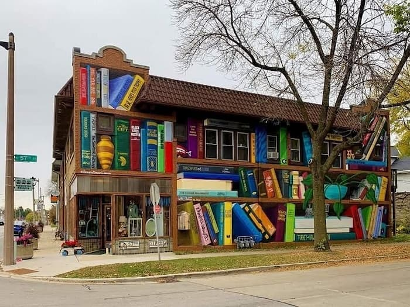
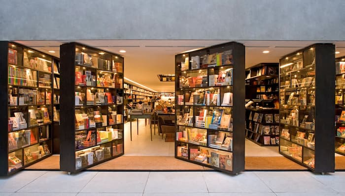

Этот книжный магазин, спрятанный в районе Вашингтон-Хайтс, — последний детский книжный магазин в Милуоки. Основанный в 1981 году, он сохранил дух уютного пространства, где книги для детей и подростков расставлены с особым вниманием. Владельцы Джо Кроз и Мэри Бет Дугани превратили его в место, где можно найти не только классику, но и редкие издания в областях науки, математики и мультикультурной литературы.
Ощущения: Заходя сюда, словно попадаешь в гости к другу, который собрал лучшие истории со всего света. Деревянные игрушки на полках, сладости у кассы и тихие уголки для чтения создают атмосферу тепла. Особенно запоминается запах старых переплетов, смешанный с ароматом шоколада из соседней витрины.
Этот магазин при древнейшей христианской библиотеке мира (основана в VI веке) — место, где история ощущается физически. Архитектура здания, сохранившегося с византийских времен, дополнена скромными деревянными стеллажами. Здесь можно найти репродукции рукописей, включая Синайский кодекс.
Ощущения: Тишина здесь глубокая, прерываемая лишь шелестом страниц. Свет, проникающий через узкие окна, падает на пыльные фолианты, словно подчеркивая их возраст.

Спроектированный архитектором Марио Бьянки, этот магазин напоминает лабиринт с кирпичными арками и скрытыми комнатами. Особенность — «библиотека-невидимка»: часть полок маскируется под стены, открываясь только при приближении.
Ощущения: Блуждая между секциями, то и дело натыкаешься на неожиданные уголки — например, на мини-кафе с видом на внутренний сад.
Крупнейший в мире плавучий книжный магазин, созданный на базе судна 1970-х годов. Интерьер сочетает морскую тематику с современным минимализмом. Книги здесь продаются по символическим ценам, а команда волонтеров проводит литературные вечера.
Ощущения: Качка под ногами и запах морской соли смешиваются с ароматом бумаги. В трюме, где раньше хранились грузы, теперь стоят стеллажи с книгами на десятках языков.